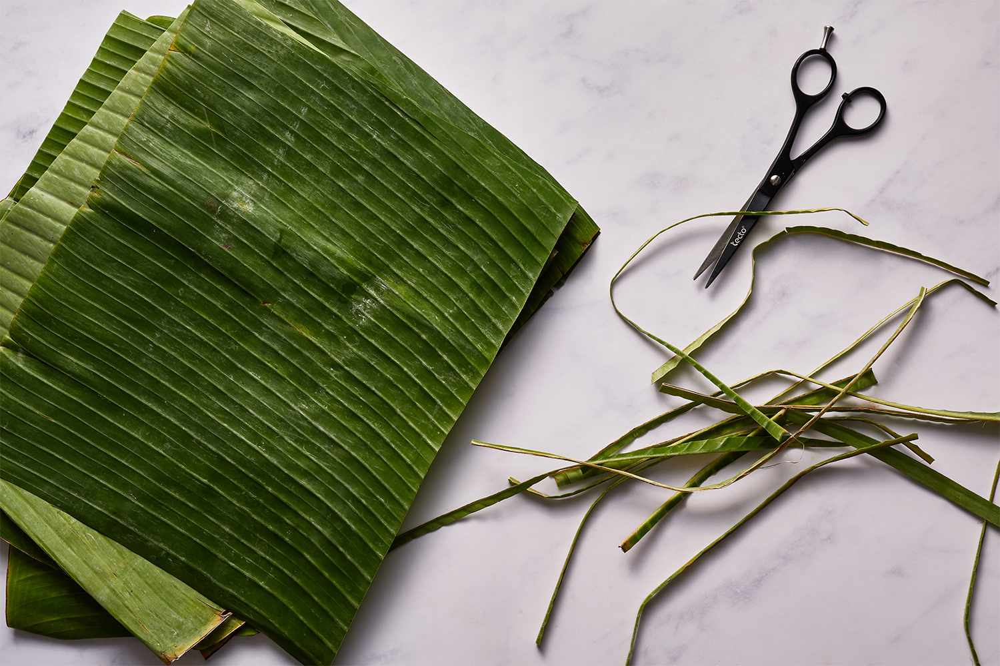
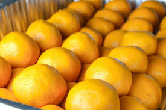
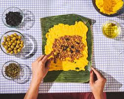
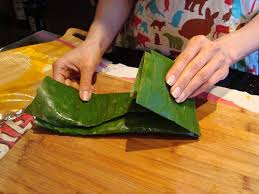
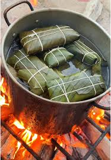
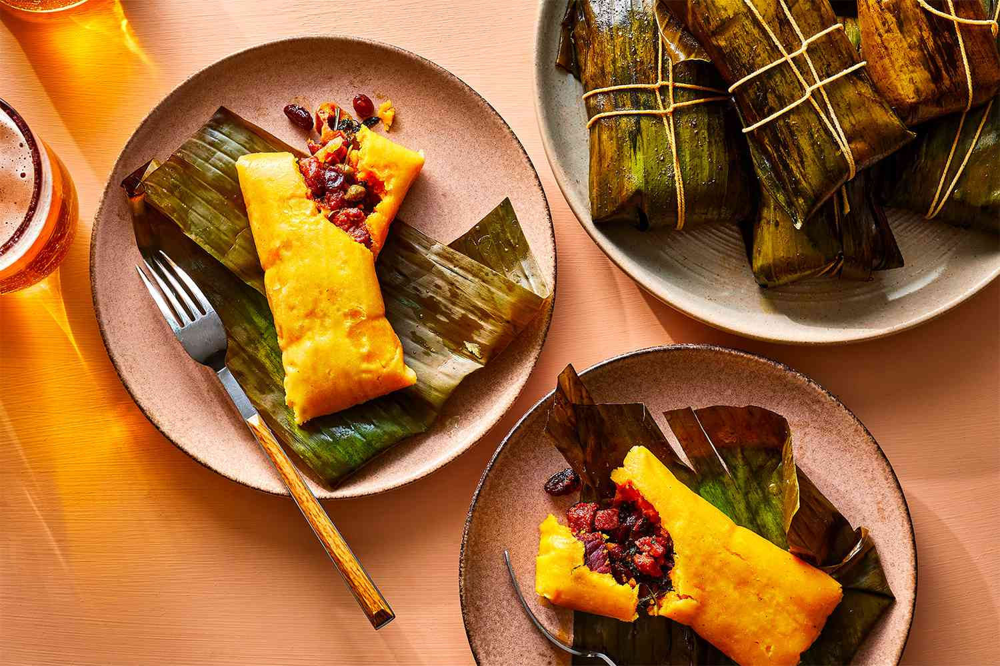

Hallacas
What is an hallaca?
Hallaca consists of corn dough stuffed with a stew of beef,
pork, or chicken and other ingredients such as raisins, capers, and olives,
fresh onion rings, red and green bell pepper slices.
On this page you'll learn how to cook a venezuelan hallaca.
Ingredients
These are the ingredients required
Meat filling
- 1 beef top sirloin roast (4 1/2 lb )
- 1 boneless pork shoulder roast (4 1/2 lb)
- 2 1/2 lbs bacon
- 2 white onions, diced
- 6 sweet peppers, diced
- 2 medium red bell peppers, diced
- 1 cup chopped green onions
- 8 cloves garlic, finely chopped
- 1 tablespoon dried Mexican oregano leaves
- 2 tablespoons salt
- 1 tablespoon ground cumin
- 1 tablespoon garlic powder
- 1 tablespoon black pepper
- 1 1/2 bottle (1.75ml each) marsala cooking wine
- 1 cup vegetable oil
Dough
- 1 cup lard (rendered pork fat)
- 1 cup anatto (achiote)
- 6 lb P.A.N.® pre-cooked white corn meal
- 15 cups from 4 cartons (32 oz) Progresso™ Reduced Sodium Chicken Broth
- 2 1/4 lb butter, softened
- Salt, as desired
Hallacas
- 12 lb frozen plantain leaves, thawed
- 1/2 cup vegetable oil
- 4 medium white onions, sliced separated into rings
- 3 red bell peppers, cut in thin strips
- 4 cups fresh parsley springs
- 1 1/2 cups raisins
- 1 can (19 oz) Progresso™ Chickpeas, drained, rinsed
- 1/2 cup capers
- 2 cups pimiento-stuffed green olives
- 2 lb bacon, cut into 2-inch pieces
- 1 roll kitchen twine, cut into 50 pieces of 1.5 meters each (about 5 feet)
Preparation
- To make the guiso crudo (filling), cut the beef, pork and bacon in small pieces. Place everything in a large
container or pot that has a lid. Add the onion, sweet pepper, green pepper, green onion and garlic. Season
with oregano, salt, cumin,
garlic powder , pepper, cooking wine and vegetable oil. Mix well. Cover and let marinate overnight in the
refrigerator, stirring occasionally.
- To prepare the leaves, sash with water; wiping them clean with a damp cloth and wiping them with a dry one.
Divide the leaves in two types: one that's the main one (the biggest one) which is where you have to place
the dough and hallaca filling and the second leaf (smaller one) that covers, encloses and protects the tamal
while is cooking. You should remove the center stem from the leaves with a kitchen shears since this
prevents them from bending easily. Be careful not to break the leaf while you remove the stem.

- To make the dough, heat a saucepan over medium heat. Add the pork fat and annatto grains. Let the pork fat
dissolve and the annatto to render its color. Remove from the stove and let cool. In a large container, add
the corn meal and incorporate little by little with the chicken broth and softened butter. Knead vigorously
and add the pork fat with annatto and salt as desired. The dough has to be soft and a yellow color. Divide
the dough in 50 equal balls.

- To fill the hallacas, dampen a large plantain leaf with a bit of vegetable oil. Place one ball of dough in
the middle of a leaf. Extend the dough in a circular motion with your hands until it is 1/4 inch thick. Add
one and a half tablespoons of guiso crudo with its juice in the center of the dough. On top of the filling,
place 2 onion rings, 1 pepper strip, one parsley sprig, 3 raisins, 2 chickpeas, 2 capers, 2 olives and a
small piece of bacon.

- To fold the hallacas, take the wider edges of the leaf and fold them upward. Create a fold until it is
completely sealed. Fold the other two ends towards the inside and wrap it with the smaller leaf. Tie the
hallacas with the previously cut kitchen twine. Cross them three times in each direction (horizontal and
vertical) and close with a knot or bow.

- In a large pot, boil 8 gallons of water at high heat. Place about half of the hallacas into the boiling
water, cover and cook over low heat for 1 1/2 hours. Repeat the process with the other hallacas or you can
use two pots at the same time.

- Remove and drain hallacas, preferably in the vertical position. Let cool and refrigerate until you are ready
to eat. Since they take a lot of work, the custom is to prepare large quantities of hallacas. These tamales
can be kept in the fridge for up to 1 week or frozen for up to 6 months.
- When you need to heat the hallacas again, thaw in refrigerator overnight if frozen. Boil water in a deep pot
at high heat. Add the hallacas you wish to reheat (make sure the water is covering them). Lower the heat to
medium and cook for 20 minutes. Remove the pot from the stove. Drain the hallacas, cut the twine, remove the
leaf and enjoy!

Home